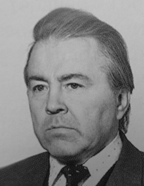

Родился в 1932 году в селе Половинка Кизеловского района Пермской области.
С 1949 по 1953 гг. обучался в Иркутском музыкальном училище по классу баяна (класс баяна М. С. Иванова) .
Первую профессиональную работу — «Первый концерт для баяна с оркестром русских народных инструментов» написал в августе 1952 г.
В 1955—1958 гг. — руководитель коллективов баянистов заводских клубов Ленинграда. В 1959 г.
окончил композиторский факультет Ленинградской государственной консерватории (класс профессора В. В. Волошинова).
В 1959—1961 г. — преподаватель музыкальной школы ленинского района г. Ленинграда, в 1961—1970 гг.
— педагог Ленинградского института имени Крупской, с 1970 по 1974 г. преподаватель училища культуры имени Мусоргского. С 1963 г.
член Союза композиторов СССР.
С 1974 года — профессор, доцент преподаватель класса баяна,
инструментовки и композиции Петрозаводского филиала Ленинградской государственной консерватории.
Произведения А. Л. Репникова включены во многие рекомендательные списки российских и международных конкурсов,
в репертуар оркестров имени В.
Андреева, имени Осипова, ансамбля «Россия».
Руководил оркестром баянистов Петрозаводского городского Дома культуры. Известны работы
А. Л. Репникова для ансамбля «Кантеле» — «Рождение кантеле» (1984),
«Колокола Кижского погоста» (1988) и другие.
Автор учебных пособий, в том числе «Краткого курса инструментовки для оркестров баянов и аккордеонов. Учебник» (1968).
Такие произведения А. Л. Репникова, как 2-й и 3-й концерты для баяна, концерт-рапсодия для балалайки с оркестром,
кантата «Песни русских рабочих» стали объектом изучения нескольких поколений музыковедов. Обладатель серебряного диска
XIII международного фестиваля «Баян и баянисты» за вклад в баянное искусство (2002).